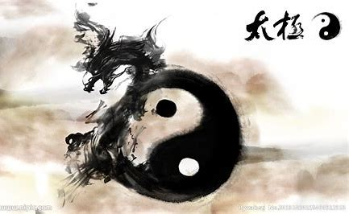

概览：
医诞生于原始社会，春秋战国时期中医理论已基本形成，之后历代均有总结发展。除此之外对汉字文化圈国家影响深远，如日本医学、韩国韩医学、朝鲜高丽医学、越南东医学等都是以中医为基础发展起来
[1]中医承载着中国古代人民同疾病作斗争的经验
和理论知识，是在古代朴素的唯物论和自发的辩证法思想指导下，通过长期医疗实践逐步形成并发展成的医学理论体系。
[1]中医学以阴阳五行作为理论基础，将人体看成是气、形、神的统一体，通过“望闻问切”四诊合参的方法，探求病因、病性、病位，分析病机及人体内五脏六腑、经络关节、气血津液的变化，判断邪正消长，进而得出病名，归纳出证型，以辨证论治原则，制定“汗、吐、下、和、温、清、补、消”等治法，使用中药、针灸、推拿、按摩、拔罐、气功、食疗等多种治疗手段，使人体达到阴阳调和而康复。
[1]2018年10月1日，世界卫生组织首次将中医纳入其具有全球影响力的医学纲要。
发展历史：
自清朝末年，中国受西方列强侵略，国运衰弱。中医学陷入存与废的争论之中。同属中国医学体系的日本医学、韩国的韩医学亦是如此。中医中药在中国古老的大地上已经运用了几千年
的历史，经过几千年的临床实践，证实了中国的中医中药无论是在治病上、在防病上，还是在养生上，都是确凿有效可行的。在西医未传入中国之前，我们的祖祖辈辈都用中医中药来治疗疾病，挽救了无数人的生命。中医对疾病的治疗是宏观的、全面的。中医，即相对西医而言。在西方医学没有流入中国以前，中医基本不叫中医这个名字，而是有独特且内涵丰富的称谓。运气学说运气学说 又称五运六气，是研究、探索自然界天文、气象、气候变化对人体健康和疾病的影响的学说。五运包括木运、火运、土运、金运和水运，指自然界一年中春、夏、长夏、秋、冬的季候循环。六气则是一年四季中风、寒、暑、湿、燥、火六种气候因子。运气学说是根据天文历法参数用来推算、预测来年的天象、气候、疾病发生流行的规律，并提供预防、养生的方法。精气学说气是构成天地万物的原始物质。气的运动称为“气机”，有“升降出入”四种形式。由运动而产生的各种变化，称为“气化”，如动物的“生长壮老已”，植物的“生长化收藏”。气是天地万物之间的中介，使之得以交感相应。如：“人与天地相参，与日月相应”。天地之精气化生为人。阴阳学说阴阳是宇宙中相互关联的事物或现象对立双方属性的概括。最初是指日光的向背，向日光为阳，背日光为阴。阴阳的交互作用包括：阴阳交感、对立制约、互根互用、消长平衡、相互转化。阴阳学说是中国古代哲学范畴。邓氏的现代阴阳是“对立统一”或“矛盾关系”的一种划分或细分，两者是种属关系。对立统一规律是“阴阳”的上位属概念，阴阳则是对立统一的两个下位种概念。阴阳是互不相容又紧密联系的两个对立面的一对性态或属性。阴阳的内涵互相否定，一个概念“阴”肯定对象的阴的属性，另一个概念“阳”则以否定阴概念所肯定的属性，作为阳对象的属性。阴阳的外延互相排斥，又相互互补，其总和等于它们最邻近的属概念的外延，即两个种概念外延的和或并。阴阳是对立统一或矛盾关系中两个不同性态，属性的一对哲学或逻辑范畴的概括，就是两事物或一事物即相互依赖，相互联系，又相互对立，相互排斥，相互否定，相反相承的一对并列的种概念。（邓宇等的现代阴阳概念与定义）。人们通过对矛盾现象的观察，逐步把矛盾概念上升为阴阳范畴，并用阴阳二气的消长来解释事物的运动变化。阴阳学说认为世界是物质的，物质由阴阳二部分组成，凡是剧烈运动的、外向的、上升的、温热的、明亮的，都属于阳。相对静止的、内守的、下降的、寒冷的、晦暗的，都属阴。因而阴阳存在两个对立面，在阴阳消长和对立统一作用下，相互资生、相互制约、相互变化中构成世界万物。中医运用阴阳对立统一的观念来阐述人体上下、内外各部分之间，以及人体生命同自然、社会这些外界环节之间的复杂联系。阴阳对立统一的相对平衡，是维持和保证人体正常活动的基础；阴阳对立统一关系的失调和破坏，则会导致人体疾病的发生，影响生命的正常活动。
医学理论：
中医理论来源于对医疗经验的总结及中国古代的阴阳五行思想。其内容包括精气学说、阴阳五行学说、气血津液、藏象、经络、体质、病因、发病、病机、治则、养生等。早在两千多年前，中医专著《黄帝内经》问世，奠定了中医学的基础。时至今日，中国传统医学相关的理论、诊断法、治疗方法等，均可在此书中找到根源。中医学理论体系是经过长期的临床实践，在唯物论和辩证法思想指导下逐步形成的，它来源于实践，反过来又指导实践。通过对现象的分析，以探求其内在机理。因此，中医学这一独特的理论体系有两个基本特点，一是整体观念，二是辨证论治。中医的基础理论是对人体生命活动和疾病变化规律的理论概括，它主要包括阴阳、五行、气血津液、脏象、经络、运气等学说，以及病因、病机、诊法、辨证、治则治法、预防、养生等内容。
运气学说运气学说又称五运六气，是研究、探索自然界天文、气象、气候变化对人体健康和疾病的影响的学说。五运包括木运、火运、土运、金运和水运，指自然界一年中春、夏、长夏、秋、冬的季候循环。六气则是一年四季中风、寒、暑、湿、燥、火六种气候因子。运气学说是根据天文历法参数用来推算、预测来年的天象、气候、疾病发生流行的规律，并提供预防、养生的方法。精气学说气是构成天地万物的原始物质。气的运动称为“气机”，有“升降出入”四种形式。由运动而产生的各种变化，称为“气化”，如动物的“生长壮老已”，植物的“生长化收藏”。气是天地万物之间的中介，使之得以交感相应。如：“人与天地相参，与日月相应”。天地之精气化生为人。阴阳学说阴阳是宇宙中相互关联的事物或现象对立双方属性的概括。最初是指日光的向背，向日光为阳，背日光为阴。阴阳的交互作用包括：阴阳交感、对立制约、互根互用、消长平衡、相互转化。阴阳学说是中国古代哲学范畴。邓氏的现代阴阳是“对立统一”或“矛盾关系”的一种划分或细分，两者是种属关系。对立统一规律是“阴阳”的上位属概念，阴阳则是对立统一的两个下位种概念。阴阳是互不相容又紧密联系的两个对立面的一对性态或属性。阴阳的内涵互相否定，一个概念“阴”肯定对象的阴的属性，另一个概念“阳”则以否定阴概念所肯定的属性，作为阳对象的属性。阴阳的外延互相排斥，又相互互补，其总和等于它们最邻近的属概念的外延，即两个种概念外延的和或并。阴阳是对立统一或矛盾关系中两个不同性态，属性的一对哲学或逻辑范畴的概括，就是两事物或一事物即相互依赖，相互联系，又相互对立，相互排斥，相互否定，相反相承的一对并列的种概念。（邓宇等的现代阴阳概念与定义）。人们通过对矛盾现象的观察，逐步把矛盾概念上升为阴阳范畴，并用阴阳二气的消长来解释事物的运动变化。阴阳学说认为世界是物质的，物质由阴阳二部分组成，凡是剧烈运动的、外向的、上升的、温热的、明亮的，都属于阳。相对静止的、内守的、下降的、寒冷的、晦暗的，都属阴。因而阴阳存在两个对立面，在阴阳消长和对立统一作用下，相互资生、相互制约、相互变化中构成世界万物。中医运用阴阳对立统一的观念来阐述人体上下、内外各部分之间，以及人体生命同自然、社会这些外界环节之间的复杂联系。阴阳对立统一的相对平衡，是维持和保证人体正常活动的基础；阴阳对立统一关系的失调和破坏，则会导致人体疾病的发生，影响生命的正常活动。
历史典故：
公元前26～公元前22世纪时，黄帝是华夏族领袖，姓姬号轩辕氏、有熊氏。岐伯，传说中的医家，黄帝的臣子。现存有中国最早的中医理论专著是《内经》，此书托黄帝与岐伯讨论医学，并以问答的形式而成，又称《黄帝内经》。后世称中医学的“岐黄”、“岐黄之术”，即源于此。
医中圣手
《孔子传》载：“于事无不通，谓之圣”，即无所不通。手，指专司或专情其事的人。医中圣手即是对医生精湛医术的高度称赞。
扁鹊卢医
《史记·扁鹊仓公列传》载：扁鹊者，渤海郡郑人也，姓秦，名越人，其治赵简子、太子疾。《列子·力命篇》载：医者卢氏被人称为“神医”。扁鹊卢氏即“正统神医”也。
悬壶
《后汉书·费长房传》载，市中有一老翁卖药，悬一壶于市头。而他的药给人治病，每每药到病除，十分有效，引起人们的注意。结果发现这个神奇的老头，每到落市关门后，他就跳入葫芦里。古代医药不分家，就把“悬壶”作为行医的代称。一些开业医生也将葫芦作为招牌，表示开业应诊之意，后人称医生的功绩为“悬壶济世”。

杏林
三国时董奉，医术高明，医德高尚，为人治病，不受谢，不受礼，只要求治愈者在他房前栽杏树作为纪念。重症愈者种5株，轻者1株。数年后，蔚然成林，红杏累累。他建一“草仓”，告诉人们
，要杏果的，不用付钱，只要拿一器谷子来换一器杏果。这样用杏果换来的谷子堆积满仓，他用这些谷子救济贫民。人们非常感谢他，送他匾额上写“杏林”、“医林”、“誉满杏林”、“杏林春暖”。这些赞誉之词成为医德高尚、医术高明的雅称。
虎守杏林
传说，董奉一天回家途中遇茅草丛中卧着一只老虎。细看没有吃人的凶相，一动不动，抬头张嘴，大声喘气，流着泪，表情很痛苦样子，是求董奉治病。董仔细看了老虎说：“明天此时你来此等候，我给你治病。”老虎点头走了。第二天董奉把两个铁环戴在胳膊上，叫老虎张口，铁环用来防虎咬。他用手掏出老虎喉咙里的骨头，治愈了老虎的病，后来老虎为了报恩，就为董奉守杏林。今人用“虎守杏林”，意在褒扬像董奉那样高超的医术。 再世华佗 华佗一次在途中，见有人出殡，他看见棺材缝里流出来的血，还像活人的血，于是上前救治，终于救活在棺材里假死的产妇，被人们誉为“神医”。他精通内、外、妇、儿、针灸各科。《三国演义》说他能为曹操开头颅治其头风病。后人用“再世华佗”来赞扬医生的医术高明。
青囊
指古代医生盛医书的囊，后借指医术。《后汉书·华佗传》张冀《补注》：“吴押狱者每以酒食供奉，佗感其恩，告曰：‘我死非命，有青囊未传，二子不能继业，修书与汝，可往取之。’吴至金城，取又藏之。佗知不免，大饮如醉而殂。吴弃役回家，向妻索书，妻曰：‘纵学得神术，终毙于狱中，故我以囊烧毁也。’”因华佗精医术，生前行医各地，声名颇著，所以，“青囊”也成了医术的代称。
苍生大医
唐代药王孙思邈，医德高尚，堪称医学界的典范。他在《千金要方》中写道：“若有疾厄（灾难）来求救者，不得问其贵贱贫富，怨亲善友，华夷智愚，普同一等，皆如至亲之想。不得瞻前顾后，虑吉凶，护措身命。深心凄怆，勿避昼夜、寒暑、饥渴、疲劳、一心赴救，无作功夫形迹之心，如此可成苍生大医。”后人对医德高尚的医生尊称“苍生大医”。 |